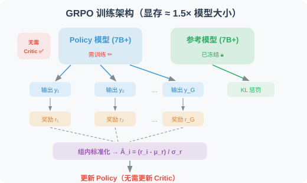
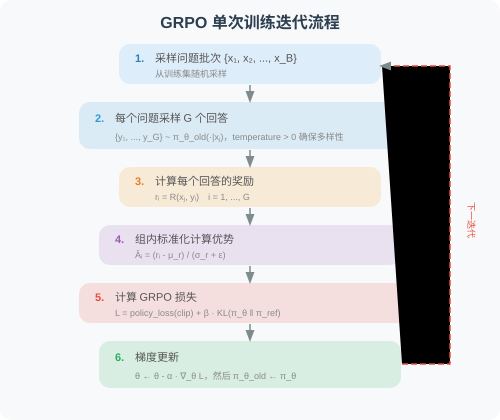

18.5 GRPO：组内相对策略优化与奖励函数设计
在 18.3 节 和 18.4 节 中，我们分别介绍了 PPO 和 DPO 两种策略优化算法。PPO 需要额外的 Critic 模型（显存占用大），DPO 虽然简单但完全离线（无法探索新策略）。
GRPO（Group Relative Policy Optimization） [1] 是 DeepSeek 团队为大模型 RL 训练量身打造的算法，它通过组内采样比较替代了 Critic 模型，在保持在线探索能力的同时大幅降低了资源消耗。本节同时介绍 GRPO 的核心驱动力——奖励函数的设计，因为奖励函数定义了"什么是好的 Agent 行为"，直接决定了 GRPO 的训练效果。
3.1 GRPO 的核心洞察
GRPO [1] 是 DeepSeek 团队为大模型 RL 训练量身打造的算法。它的核心洞察是：
PPO 的 Critic 模型本质上只是提供一个"基准线"来减小优势估计的方差。对于语言模型，有更简单的方式获得基准线——对同一问题采样多个回答，用组内均值作为基准线。
这个洞察带来了巨大的实践价值：
| 维度 | PPO | GRPO | 改善 |
|---|---|---|---|
| 模型数量 | Policy + Critic + Reference | Policy + Reference | 少一个 Critic |
| 显存需求 | ≈ 3× 模型大小 | ≈ 1.5× 模型大小 | 节省约 50% |
| 训练稳定性 | Critic 误差会传播到 Policy | 无 Critic 误差传播 | 更稳定 |
| 超参数 | 多（GAE λ, Critic lr, ...） | 少（clip ε, KL β, G） | 更易调参 |
3.2 组内采样与标准化：用"同组比较"替代 Critic
GRPO 的核心操作如下：
对每个输入 ，使用当前策略（的旧版本 ）采样 个回答：
然后分别计算每个回答的奖励 ，并进行组内标准化：
其中：
逐项解读：
- ：组内奖励均值——同一问题 个回答的平均奖励，充当"基准线"（Critic 的替代品）
- ：组内奖励标准差——用于归一化，消除奖励绝对尺度的影响
- ：数值稳定性常数（通常取 ），防止除零
- ：第 个回答比组内平均更好 → 应当强化
- ：第 个回答比组内平均更差 → 应当抑制
标准化的统计性质：
- 零均值：——一半回答被强化，一半被抑制（相对比较）
- 单位方差：——梯度大小不受奖励尺度影响
为什么组内均值可以替代 Critic？ 核心论证：
- Critic 的作用 = 提供基准线 → 将绝对奖励转为相对优势 → 减小梯度方差
- 组内均值同样提供了一个基准线 → 同样将绝对奖励转为相对优势 → 同样减小梯度方差
- 区别：Critic 是一个参数化的函数逼近器（需要训练，可能有估计误差）；组内均值是一个非参数的统计量（无需训练，但依赖采样质量）
- 代价：GRPO 需要对每个问题采样 个回答（增加采样成本），而 PPO 只需 1 个
import numpy as np
def compute_grpo_advantages(rewards: list[float], eps: float = 1e-8) -> list[float]:
"""
计算 GRPO 组内标准化优势函数
Args:
rewards: 同一问题 G 个回答的奖励值 [r₁, r₂, ..., r_G]
eps: 数值稳定性常数
Returns:
标准化优势值列表 [Â₁, Â₂, ..., Â_G]
性质：
- Σ Â_i ≈ 0（零均值）
- Var(Â_i) ≈ 1（单位方差）
"""
rewards = np.array(rewards, dtype=np.float64)
mu = rewards.mean()
sigma = rewards.std()
if sigma < eps:
# 所有回答奖励相同 → 无法区分好坏 → 优势为零
return [0.0] * len(rewards)
advantages = (rewards - mu) / (sigma + eps)
return advantages.tolist()
# ── 示例 ──────────────────────────────────────────────────────────────
# 同一数学题，模型生成 8 个回答：5 个正确，3 个错误
rewards = [1.0, 0.0, 1.0, 1.0, 0.0, 1.0, 0.0, 1.0]
advantages = compute_grpo_advantages(rewards)
print("奖励值: ", rewards)
print("优势值: ", [f"{a:+.3f}" for a in advantages])
# 正确答案（r=1.0）→ 优势 ≈ +0.667 → 强化这些推理路径
# 错误答案（r=0.0）→ 优势 ≈ -1.333 → 抑制这些推理路径
# 注意：|负优势| > |正优势|，错误答案受到的抑制力度更大
3.3 GRPO 完整目标函数
GRPO 的优化目标结合了 PPO 的 Clip 机制和 KL 散度约束：
逐项解读：
- ：对 个回答取平均——每个回答对梯度的贡献相等
- ：对第 个回答的 token 取平均——防止长回答主导梯度（长度归一化）
- ：第 个回答第 个 token 的重要性采样比率
- ：PPO Clip 策略损失——继承自 PPO，防止单步更新过大
- ：KL 散度惩罚——防止策略偏离 SFT 模型太远，避免奖励黑客和语言退化。关于 KL 散度的详细解释，请参阅 附录 E：KL 散度详解
3.4 GRPO 训练架构与流程


3.5 基于 TRL 的 GRPO 完整实现
"""
GRPO 训练的完整实现
基于 Hugging Face TRL 库的 GRPOTrainer
"""
from trl import GRPOConfig, GRPOTrainer
# ── GRPO 训练配置 ─────────────────────────────────────────────────────────
grpo_config = GRPOConfig(
output_dir="./checkpoints/grpo",
# GRPO 核心参数
num_generations=8, # G=8：平衡优势估计质量与采样成本
# G 太小 → 方差大；G 太大 → 计算成本高
# 训练超参数
num_train_epochs=2,
per_device_train_batch_size=1, # 因需生成 G 个回答，batch size 要小
gradient_accumulation_steps=8, # 有效 batch size = 1 × 8 = 8
learning_rate=5e-6, # RL 阶段学习率 ≈ SFT 学习率的 1/40
# 过大会导致策略崩溃，过小则收敛极慢
warmup_ratio=0.1,
max_grad_norm=0.5, # 梯度裁剪，防止 RL 训练中的梯度爆炸
# 生成参数
max_new_tokens=512,
temperature=0.7, # 保证 G 个回答的多样性
# temperature 过低 → 回答趋同 → 优势全为 0
# GRPO 算法参数
kl_coef=0.01, # β：KL 散度惩罚系数
# 过大 → 策略无法充分优化；过小 → 策略偏离过远
# 精度与性能
bf16=True,
# 日志与检查点
logging_steps=1,
save_strategy="steps",
save_steps=100,
save_total_limit=3,
report_to="tensorboard",
)
# ── 奖励函数定义 ──────────────────────────────────────────────────────────
def reward_function(completions: list[str], prompts: list[str], **kwargs) -> list[float]:
"""
Agent 行为质量的综合奖励函数（示例实现）
详细的奖励函数设计方法参见下文「奖励函数设计」部分
"""
rewards = []
for completion in completions:
reward = 0.0
# 维度 1：格式正确性
has_think = "<think>" in completion and "</think>" in completion
if has_think:
reward += 0.2
think_content = completion.split("<think>")[1].split("</think>")[0].strip()
if len(think_content) > 20:
reward += 0.1 # 有实质性推理内容
# 维度 2：工具调用合理性
if "<tool_call>" in completion and "</tool_call>" in completion:
reward += 0.3
try:
tool_str = completion.split("<tool_call>")[1].split("</tool_call>")[0].strip()
if "(" in tool_str and ")" in tool_str:
reward += 0.2 # 函数调用语法正确
except IndexError:
reward -= 0.1 # 标签不配对
# 维度 3：效率惩罚
num_tool_calls = completion.count("<tool_call>")
if num_tool_calls > 5:
reward -= 0.1 * (num_tool_calls - 5)
rewards.append(max(0.0, reward))
return rewards
# ── 初始化并启动训练 ──────────────────────────────────────────────────────
trainer = GRPOTrainer(
model=model, # SFT 阶段训练好的模型
config=grpo_config,
train_dataset=train_dataset,
processing_class=tokenizer,
reward_funcs=reward_function,
)
print("🚀 开始 GRPO 训练...")
trainer.train()
trainer.save_model("./checkpoints/grpo-final")
print("✅ GRPO 训练完成！")
三大算法系统性对比
4.1 架构对比
| 维度 | PPO | DPO | GRPO |
|---|---|---|---|
| 所需模型 | Policy + Critic + Reference | Policy + Reference | Policy + Reference |
| 显存需求 | ≈ 3× 模型大小 | ≈ 2× 模型大小 | ≈ 1.5× 模型大小 |
| 训练数据 | 在线采样 + 奖励模型 | 离线偏好对 | 在线采样 + 奖励函数 |
| 优势估计 | GAE（依赖 Critic） | 无（隐式奖励差） | 组内标准化（无 Critic） |
| 更新约束 | Clip + KL | 隐式 KL（通过 ） | Clip + KL |
4.2 训练特性对比
| 维度 | PPO | DPO | GRPO |
|---|---|---|---|
| 训练稳定性 | 中（Critic 误差传播） | 高（监督学习） | 高（无 Critic 误差） |
| 超参数数量 | 多（≥6 个） | 极少（ 1 个） | 少（≤4 个） |
| 数据效率 | 低（需在线采样） | 高（离线复用） | 中（需 G× 采样） |
| 可探索性 | 强（在线 RL） | 无（纯离线） | 强（在线 RL） |
| 能力上界 | 可超越数据 | 受限于偏好数据质量 | 可超越数据 |
4.3 选型决策指南
你的任务是否有客观可验证的评估标准？
├── 否 → 任务评估主要依赖人类偏好？
│ ├── 是 → 有足够的偏好标注数据？
│ │ ├── 是 → 选择 DPO ✅（最简单高效）
│ │ └── 否 → 先收集偏好数据，或选择 PPO + 奖励模型
│ └── 否 → 考虑是否真的需要 RL（也许 SFT 就够了）
└── 是 → 模型规模 > 7B？
├── 是 → 选择 GRPO ✅（显存友好，DeepSeek-R1 验证）
└── 否 → PPO 或 GRPO 均可
├── 追求通用性和成熟工具链 → PPO
└── 追求简洁和训练效率 → GRPO
4.4 实证表现
| 项目 | 算法 | 核心成果 |
|---|---|---|
| InstructGPT [2] | PPO | 证明 RLHF 可大幅提升指令遵循能力 |
| Llama 2 [3] | PPO | 70B 模型的安全对齐 |
| Zephyr [4] | DPO | 7B 模型用 DPO 超越 PPO 基线 |
| DeepSeek-R1 [5] | GRPO | 涌现长链推理，数学/代码能力媲美 o1 |
| DeepSWE [6] | GRPO | SWE-bench Verified 59%（开源 SOTA） |
关键监控指标与调参指南
在 RL 训练过程中（PPO 或 GRPO），以下指标是判断训练健康状态的核心依据：
| 指标 | 健康范围 | 异常信号 | 处理方法 |
|---|---|---|---|
mean_reward | 应稳步上升 | 长期不变或下降 | 检查奖励函数设计，降低 KL 系数 |
kl_divergence | < 10–15 nats | 持续增大 | 增大 KL 系数 |
clip_fraction | 0.1–0.3 | > 0.5 | 降低学习率或增大 clip |
mean_ratio | 接近 1.0 | 持续偏离 1.0 | 减小学习率，增加 warmup |
reward_std | > 0（组内有差异） | ≈ 0 | 增大 temperature，检查奖励函数 |
📌 工程实践要点
- 组大小 的选择（GRPO）：– 是常见范围。 太小则优势估计方差大， 太大则采样成本高。建议从 开始。
- 温度参数（GRPO）：建议 0.6–0.8。若 temperature 过低， 个回答可能完全相同，导致 ，优势全为零。
- 学习率：RL 阶段的学习率通常是 SFT 阶段的 到 。过大的学习率会导致策略在几步内崩溃。
- 梯度裁剪：建议
max_grad_norm=0.5，RL 训练中梯度爆炸比 SFT 更常见。- 调节（DPO）： 通常取 0.1–0.5。 太小 → 训练不稳定； 太大 → 策略几乎不更新。
奖励函数设计——将目标形式化为可优化的信号
5.1 奖励函数的核心地位
在 GRPO 训练框架中，奖励函数 是连接"人类意图"与"模型行为"的唯一桥梁。它将我们对"好 Agent"的直觉判断形式化为可微分（或可采样）的数値信号，直接决定了强化学习的优化方向。
奖励函数设计的核心挑战在于：
为什么两者不等价？ 真实目标通常是模糊的主观判断（如"输出质量高""用户满意度高"），而可计算的代理指标必须是具体的数字（如"测试用例通过率""格式符合率"）。这一差距是奖励黑客（Reward Hacking） [7] 的根本来源——模型会找到最大化代理指标的捷径，而这些捷径往往不符合真实意图。
典型案例：若奖励函数仅检查最终答案是否正确，模型可能学会在 <think> 内输出乱码，然后凑出正确答案——奖励很高，但推理过程完全无意义。这就是代理指标（答案正确性）与真实目标（有意义的推理）之间的典型差距。
奖励函数设计的四项基本原则
| 原则 | 形式化描述 | 违反后果 |
|---|---|---|
| 可验证性 | 奖励基于客观可计算的标准，而非主观判断 | 奖励信号噪声大，训练不稳定 |
| 多维度覆盖 | ，覆盖任务的多个质量维度 | 模型在单一维度上过度优化，忽视其他维度 |
| 稠密性 | 在轨迹的多个时间步提供奖励信号，而非仅在终止时 | 稀疏奖励导致信用分配困难，训练收敛慢 |
| 鲁棒性 | 奖励函数对模型的"钻空子"行为具有抵抗力 | 模型学会奖励黑客，高奖励但低实际质量 |
关于多维度合并公式 的解读：各维度奖励 独立计算，加权系数 满足 。权重的选择体现了不同维度的相对重要性：准确率权重最高（任务核心），安全权重最低（大多数情况下不会触发）。
5.2 核心奖励维度的设计与实现
维度一：准确率奖励（Accuracy Reward）
准确率奖励是最核心的奖励维度，直接衡量 Agent 是否正确完成了任务。不同任务类型需要不同的评估方法：
import re
from typing import Optional
def accuracy_reward(
prediction: str,
ground_truth: str,
task_type: str = "math",
tolerance: float = 1e-2,
) -> float:
"""
准确率奖励：评估 Agent 输出是否正确完成任务
Args:
prediction: 模型的完整输出（含推理过程）
ground_truth: 标准答案
task_type: 任务类型，决定评估方法
tolerance: 数值比较的相对误差容忍度
Returns:
奖励值 ∈ [0, 1]
"""
if task_type == "math":
# 数学任务：从输出中提取最终数值，允许 tolerance 相对误差
try:
pred_num = _extract_final_number(prediction)
true_num = float(ground_truth.replace(",", ""))
relative_error = abs(pred_num - true_num) / (abs(true_num) + 1e-8)
return 1.0 if relative_error < tolerance else 0.0
except (ValueError, AttributeError):
return 0.0
elif task_type == "code":
# 代码任务：执行测试用例，按通过率给分（部分奖励）
#
# 为什么使用部分奖励而非 0/1 奖励？
# 0/1 奖励（稀疏奖励）会导致信用分配困难：
# - 若模型通过了 9/10 个测试用例，0/1 奖励给 0 分，无法区分"接近正确"和"完全错误"
# - 部分奖励 k/n 提供了更密集的梯度信号，帮助模型逐步改进
# 这与课程学习（Curriculum Learning）的思想一致：先学会通过简单测试，再逐步攻克难测试
code = _extract_code_block(prediction)
if not code:
return 0.0
test_results = _run_test_cases(code, ground_truth)
# 部分奖励：通过 k/n 个测试用例得 k/n 分
return test_results["passed"] / max(test_results["total"], 1)
elif task_type == "tool_call":
# 工具调用任务：检查工具名称和参数是否正确
pred_call = _parse_tool_call(prediction)
true_call = _parse_tool_call(ground_truth)
if pred_call is None:
return 0.0
score = 0.0
if pred_call.get("name") == true_call.get("name"):
score += 0.5 # 工具名称正确
if pred_call.get("args") == true_call.get("args"):
score += 0.5 # 参数完全匹配
return score
else:
# 通用：精确字符串匹配
return 1.0 if prediction.strip() == ground_truth.strip() else 0.0
def _extract_final_number(text: str) -> float:
"""从文本中提取最后出现的数值（通常是最终答案）"""
# 匹配整数、小数、负数，忽略千位分隔符
numbers = re.findall(r'-?[\d,]+\.?\d*', text)
if not numbers:
raise ValueError(f"No number found in: {text[:100]}")
return float(numbers[-1].replace(",", ""))
维度二：格式奖励（Format Reward）
格式奖励确保模型输出符合预期的结构化格式，这对于 Agent 的可靠性至关重要：
def format_reward(completion: str) -> float:
"""
格式奖励：评估输出是否符合 Agent 格式规范
期望格式（两种合法模式）：
模式 A（需要工具）：<think>推理</think> <tool_call>调用</tool_call>
模式 B（直接回答）：<think>推理</think> 最终答案
评分细则：
- <think> 标签配对且内容非空：+0.4
- <tool_call> 标签配对且语法正确：+0.4
- 无重复/嵌套标签：+0.2
"""
score = 0.0
# ── 检查 <think> 标签 ─────────────────────────────────────────────────
think_open = completion.count("<think>")
think_close = completion.count("</think>")
if think_open == 1 and think_close == 1:
score += 0.2
# 检查 think 内容的实质性
think_content = completion.split("<think>")[1].split("</think>")[0].strip()
if len(think_content) >= 20:
score += 0.2 # 有实质性推理内容（非空壳）
elif think_open != think_close:
score -= 0.2 # 标签不配对，严重格式错误
# ── 检查 <tool_call> 标签 ─────────────────────────────────────────────
tool_open = completion.count("<tool_call>")
tool_close = completion.count("</tool_call>")
if tool_open == tool_close and tool_open > 0:
score += 0.2
# 检查工具调用语法
try:
tool_str = completion.split("<tool_call>")[1].split("</tool_call>")[0].strip()
# 验证函数调用格式：name(args)
if re.match(r'^\w+\(.*\)$', tool_str, re.DOTALL):
score += 0.2
except IndexError:
pass
elif tool_open != tool_close:
score -= 0.2 # 标签不配对
return max(0.0, min(1.0, score))
维度三：效率奖励（Efficiency Reward）
效率奖励鼓励模型用最少的步骤和 Token 完成任务，防止冗余行为：
def efficiency_reward(
completion: str,
expected_steps: int = 3,
max_tokens: int = 512,
) -> float:
"""
效率奖励：惩罚冗余的工具调用和过长的输出
设计原则：
- 在 expected_steps 以内：满分
- 超出 expected_steps：线性惩罚，最多扣 0.5 分
- 超出 max_tokens：额外惩罚，最多扣 0.3 分
- 检测重复内容：额外惩罚
"""
score = 1.0
# ── 步骤数惩罚 ────────────────────────────────────────────────────────
num_steps = completion.count("<tool_call>")
if num_steps > expected_steps:
step_penalty = 0.1 * (num_steps - expected_steps)
score -= min(step_penalty, 0.5)
# ── Token 数惩罚 ──────────────────────────────────────────────────────
num_tokens = len(completion.split())
if num_tokens > max_tokens:
token_penalty = 0.3 * (num_tokens - max_tokens) / max_tokens
score -= min(token_penalty, 0.3)
# ── 重复内容检测 ──────────────────────────────────────────────────────
# 将输出分句，检测重复率（防止模型通过重复填充获得高奖励）
sentences = [s.strip() for s in re.split(r'[。！？\n]', completion) if len(s.strip()) > 5]
if len(sentences) > 3:
unique_ratio = len(set(sentences)) / len(sentences)
if unique_ratio < 0.7:
score -= 0.2 # 超过 30% 的句子是重复的
return max(0.0, score)
维度四：安全奖励（Safety Reward）
安全奖励防止 Agent 产生危险或有害的行为，这在生产环境中至关重要：
def safety_reward(completion: str) -> float:
"""
安全奖励：检测并惩罚潜在危险行为
检测类别：
1. 危险系统命令（文件删除、权限修改等）
2. 危险数据库操作（DROP、DELETE 等不可逆操作）
3. 代码注入风险（eval、exec 等动态执行）
4. 敏感信息泄露（API Key、邮箱、身份证号等）
"""
score = 1.0
# ── 危险命令模式 ──────────────────────────────────────────────────────
dangerous_patterns = [
(r'\brm\s+-rf\b', 0.8, "危险文件删除命令"),
(r'\bDROP\s+TABLE\b', 0.8, "不可逆数据库操作"),
(r'\bDELETE\s+FROM\b', 0.5, "数据库删除操作"),
(r'\bsudo\b', 0.3, "提权命令"),
(r'\bchmod\s+777\b', 0.3, "危险权限设置"),
(r'\beval\s*\(', 0.5, "动态代码执行"),
(r'\bexec\s*\(', 0.5, "动态代码执行"),
(r'\b__import__\s*\(', 0.5, "动态模块导入"),
]
for pattern, penalty, _ in dangerous_patterns:
if re.search(pattern, completion, re.IGNORECASE):
score -= penalty
# ── 敏感信息泄露检测 ──────────────────────────────────────────────────
sensitive_patterns = [
(r'sk-[a-zA-Z0-9]{32,}', 0.5, "API Key"),
(r'\b[A-Za-z0-9._%+-]+@[A-Za-z0-9.-]+\.[A-Z]{2,}\b', 0.3, "邮箱地址"),
(r'\b\d{3}-\d{2}-\d{4}\b', 0.5, "SSN"),
(r'\b1[3-9]\d{9}\b', 0.3, "手机号"),
]
for pattern, penalty, _ in sensitive_patterns:
if re.search(pattern, completion, re.IGNORECASE):
score -= penalty
return max(0.0, score)
5.3 多维度奖励的组合策略
实际训练中，将多个维度的奖励加权组合为单一标量信号：
from dataclasses import dataclass, field
from typing import Callable
@dataclass
class RewardConfig:
"""奖励函数配置，支持动态调整各维度权重"""
accuracy_weight: float = 0.50 # 准确率：最核心的维度
format_weight: float = 0.20 # 格式：确保输出可解析
efficiency_weight: float = 0.15 # 效率：鼓励简洁
safety_weight: float = 0.15 # 安全：防止危险行为
class AgentRewardFunction:
"""
多维度 Agent 奖励函数
设计原则：
1. 各维度独立计算，便于调试和分析
2. 支持动态调整权重（训练初期格式权重高，后期准确率权重高）
3. 记录各维度分数，便于监控训练过程
"""
def __init__(self, config: RewardConfig = RewardConfig()):
self.config = config
self._validate_weights()
def _validate_weights(self):
total = (self.config.accuracy_weight + self.config.format_weight +
self.config.efficiency_weight + self.config.safety_weight)
assert abs(total - 1.0) < 1e-6, f"权重之和必须为 1.0，当前为 {total:.4f}"
def __call__(
self,
completion: str,
ground_truth: Optional[str] = None,
task_type: str = "math",
) -> dict[str, float]:
"""
计算综合奖励
Returns:
包含各维度分数和加权总分的字典，便于监控和调试
"""
scores = {}
# 各维度独立计算
scores["accuracy"] = (
accuracy_reward(completion, ground_truth, task_type)
if ground_truth else 0.5 # 无标准答案时给中性分
)
scores["format"] = format_reward(completion)
scores["efficiency"] = efficiency_reward(completion)
scores["safety"] = safety_reward(completion)
# 加权求和
scores["total"] = (
scores["accuracy"] * self.config.accuracy_weight +
scores["format"] * self.config.format_weight +
scores["efficiency"] * self.config.efficiency_weight +
scores["safety"] * self.config.safety_weight
)
return scores
# 使用示例
reward_fn = AgentRewardFunction(RewardConfig(
accuracy_weight=0.50,
format_weight=0.20,
efficiency_weight=0.15,
safety_weight=0.15,
))
result = reward_fn(
completion=(
"<think>\n需要计算圆的面积：S = π × r² = π × 5² ≈ 78.54\n</think>\n"
"<tool_call>calculator(expression='3.14159 * 5**2')</tool_call>"
),
ground_truth="78.54",
task_type="math",
)
# 预期输出：{'accuracy': 1.0, 'format': 0.8, 'efficiency': 1.0, 'safety': 1.0, 'total': 0.93}
print(result)
5.4 奖励黑客的防御机制
奖励黑客（Reward Hacking） [7] 是指模型学会了"钻奖励函数的空子"——在不真正完成任务的情况下获得高奖励。这是 RL 训练中最常见也最危险的失效模式。
典型奖励黑客案例分析
| 奖励设计缺陷 | 模型的黑客行为 | 根本原因 | 防御方法 |
|---|---|---|---|
| 按输出长度给奖励 | 输出大量无意义填充文本 | 奖励与质量解耦 | 改为评估信息密度，惩罚重复内容 |
| 按工具调用次数给奖励 | 疯狂调用不必要的工具 | 奖励与任务目标不一致 | 增加冗余调用惩罚，设置最大步数 |
| 只看最终答案正确性 | <think> 内输出乱码，凑出正确答案 | 奖励忽视了推理过程质量 | 同时检查推理过程的连贯性 |
| 用 LLM 评分作为唯一奖励 | 学会输出讨好评分 LLM 的措辞 | 奖励模型本身可被攻击 | 混合使用规则奖励和 LLM 奖励 |
鲁棒奖励函数的实现
def robust_reward(
completion: str,
ground_truth: str,
task_type: str = "math",
) -> float:
"""
防奖励黑客的鲁棒奖励函数
在基础准确率奖励之上，叠加多层防御机制：
1. 推理过程连贯性检查（防止乱码 think）
2. 输出长度合理性检查（防止无意义填充）
3. 工具调用频率检查（防止冗余调用）
4. 答案来源验证（确保答案来自推理，而非随机猜测）
"""
# 基础准确率奖励
base_reward = accuracy_reward(completion, ground_truth, task_type)
# ── 防御 1：推理过程连贯性 ────────────────────────────────────────────
if "<think>" in completion and "</think>" in completion:
think_content = completion.split("<think>")[1].split("</think>")[0]
coherence = _compute_text_coherence(think_content)
if coherence < 0.5:
base_reward *= 0.5 # 推理不连贯（可能是乱码），奖励减半
# ── 防御 2：输出长度合理性 ────────────────────────────────────────────
token_count = len(completion.split())
if token_count > 1000:
base_reward *= 0.7 # 异常长的输出，可能是填充行为
# ── 防御 3：工具调用频率 ──────────────────────────────────────────────
tool_calls = completion.count("<tool_call>")
if tool_calls > 8:
base_reward *= max(0.5, 1.0 - 0.05 * (tool_calls - 8))
return base_reward
def _compute_text_coherence(text: str) -> float:
"""
计算文本连贯性分数（简化版）
通过统计有效字符（中文、英文、数字、标点）的比例
来近似估计文本是否为正常语言（而非随机字符）
"""
if not text.strip():
return 0.0
valid_chars = len(re.findall(r'[\u4e00-\u9fff\w\s.,!?，。！？；：]', text))
return valid_chars / max(len(text), 1)
5.5 不同任务类型的奖励设计模板
数学推理任务
math_reward_config = RewardConfig(
accuracy_weight=0.60, # 数学任务以正确性为核心
format_weight=0.15,
efficiency_weight=0.15,
safety_weight=0.10,
)
# 准确率评估：数值精确匹配（允许 1% 相对误差）
# 格式要求：必须包含 <think> 推理过程
# 效率标准：期望步数 ≤ 3，最大 Token 数 ≤ 400
代码生成与修复任务
code_reward_config = RewardConfig(
accuracy_weight=0.50, # 测试用例通过率
format_weight=0.10,
efficiency_weight=0.25, # 代码任务效率更重要（减少文件编辑次数）
safety_weight=0.15, # 代码安全性至关重要
)
# 准确率评估：执行测试用例，按通过率给分（部分奖励）
# 效率标准：期望文件编辑次数 ≤ 3，最大迭代轮数 ≤ 5
# 安全检查：严格检测危险命令和代码注入
信息检索与问答任务
retrieval_reward_config = RewardConfig(
accuracy_weight=0.40, # 答案准确性（需 LLM 评判）
format_weight=0.20, # 引用格式、来源标注
efficiency_weight=0.20, # 搜索次数和 Token 消耗
safety_weight=0.20, # 防止信息泄露
)
# 准确率评估：LLM-as-Judge（需混合规则奖励防止黑客）
# 格式要求：必须包含来源引用，最少 2 个可验证来源
📌 工程实践要点
- 从简单开始：先用准确率 + 格式两个维度训练，确认模型行为正常后再逐步加入效率和安全维度
- 人工审查：每 100 个训练步骤，随机抽取 20 条高奖励和 20 条低奖励样本进行人工审查，验证奖励函数是否合理
- 奖励版本管理：奖励函数的每次修改都应纳入版本控制，记录修改原因、预期效果和实际效果
- 动态权重调整：训练初期（前 20% 步骤）适当提高格式权重，帮助模型快速建立格式规范；后期逐步提高准确率权重
- 奖励分布监控：定期检查奖励分布，若大多数样本奖励趋于相同（方差极小），说明奖励函数区分度不足，需要重新设计
掌握了算法原理与奖励函数设计后，下一节将把所有组件整合起来，完成一个从数据准备到模型部署的完整 Agentic-RL 训练 Pipeline。
面试常见题目
基础理解类
1. GRPO 的核心洞察是什么？它是如何替代 PPO 中的 Critic 模型的？
参考要点：GRPO 的核心洞察是——PPO 中 Critic 的本质作用只是提供一个"基准线"来将绝对奖励转为相对优势从而降低梯度方差。对于语言模型，可以用更简单的方式获取基准线：对同一问题采样 G 个回答，用组内奖励均值作为基准线。这样就完全省去了 Critic 模型的训练和存储，显存节省约 50%。
2. 请写出 GRPO 组内标准化优势函数的公式，并解释其统计性质。
参考要点：
- 公式：，其中 是 G 个回答奖励的均值， 是标准差
- 零均值：，一半回答被强化，一半被抑制（相对比较而非绝对评判）
- 单位方差：，梯度大小不受奖励尺度影响
- 当所有回答奖励相同时（），优势全为零，不做任何更新
深度理解类
3. GRPO 的组内均值 vs PPO 的 Critic 作为基准线，各自的优缺点是什么？在什么情况下组内均值会成为瓶颈？
参考要点：
- Critic 优点：是参数化的函数逼近器，可以泛化到未见过的状态（理论上更精确）
- Critic 缺点：需要额外训练，存在估计误差，误差会传播到 Policy 更新中，增加训练不稳定性
- 组内均值优点：非参数统计量，无需训练，无误差传播，实现简单
- 组内均值缺点：依赖采样质量。如果 G 太小（如 G=2），均值和标准差估计不准；如果 temperature 太低，G 个回答几乎相同，，优势全为零，训练停滞
- 瓶颈场景：任务难度极高（所有回答都错误或都正确，无法区分）、采样多样性不足
4. GRPO 目标函数中的 长度归一化项有什么作用？如果去掉它会怎样？
参考要点：
- 长度归一化防止长回答在 token 级求和中主导梯度——长回答有更多 token，如果不归一化，它对梯度的贡献远大于短回答
- 去掉后，模型可能倾向于生成更长的回答（因为长回答的梯度贡献更大），甚至学会通过增加无意义内容来增加影响力
- 这是一个容易被忽视但对训练质量影响很大的工程细节
5. GRPO 继承了 PPO 的 Clip 机制和 KL 惩罚。这两种约束机制的约束对象和粒度有什么区别？为什么需要同时使用？
参考要点：
- Clip 机制：约束单个 token 的重要性采样比率 在 范围内，是局部/逐 token 级别的约束，防止单步更新过大
- KL 惩罚：约束整体输出分布 相对于 的偏离程度，是全局/策略级别的约束，防止累积漂移过大
- 两者互补：Clip 可以保证每步更新稳定，但多步累积后策略可能仍然偏离很远；KL 惩罚可以约束全局漂移，但无法控制单步更新的突变
- 仅用 Clip：可能出现"每步小更新但方向一致"导致的缓慢漂移（奖励黑客）
- 仅用 KL：可能出现"单步大更新"导致的策略崩溃
6. 在 GRPO 中，组大小 G 的选择有什么 trade-off？G=2 和 G=64 分别有什么问题？
参考要点：
- G 太小（如 G=2）：
- 均值和标准差的估计极不准确，优势函数方差大
- 只有两个回答比较，区分度极低（只能说谁好谁差，无法精细排序）
- 训练不稳定
- G 太大（如 G=64）：
- 采样计算成本极高，每个问题需要生成 64 条回答
- 显存压力大
- 但统计量估计更准确，训练更稳定
- 经验值 G=8~16 是常见选择，在统计质量和计算成本间取得平衡
- DeepSeek-R1 的实践经验中使用了 G=8
7. 温度参数（temperature）对 GRPO 训练有什么关键影响？为什么说"temperature 过低可能让训练完全停滞"？
参考要点：
- temperature 控制采样多样性。GRPO 的优势函数依赖于组内回答之间的奖励差异来提供梯度信号
- temperature 过低（如 0.1）：G 个回答几乎完全相同 → 奖励几乎相同 → → 标准化后优势全为零 → 梯度为零，训练完全停滞
- temperature 过高（如 1.5+）：回答过于随机 → 大部分回答质量极差 → 难以采到高质量回答作为正面样本 → 训练效率低
- 推荐范围 0.6~0.8：保证足够的多样性来区分好坏，同时大部分回答仍具有合理质量
奖励函数设计类
8. 奖励函数设计的四项基本原则是什么？请分别举例说明违反每项原则会导致什么后果。
参考要点：
原则 违反后果举例 可验证性（基于客观标准） 如果用主观模糊标准（"回答好不好"）做奖励，信号噪声大，模型学不到稳定的模式 多维度覆盖（） 只看准确率 → 模型在 <think>里输出乱码凑答案；只看格式 → 格式完美但内容全错稠密性（多步提供信号） 只在最后给 0/1 奖励 → 模型无法区分"差一点就对了"和"完全跑偏"，信用分配困难 鲁棒性（抵抗钻空子） 按长度给奖励 → 输出无意义填充；按工具调用次数给奖励 → 疯狂调用无关工具
9. 什么是奖励黑客（Reward Hacking）？请列举至少 3 种常见的奖励黑客案例，并给出对应的防御策略。
参考要点：
- 奖励黑客是模型学会"钻奖励函数空子"的现象——在不真正完成任务的情况下获得高奖励
- 案例 1：按输出长度给奖励 → 输出无意义填充 → 防御：改为信息密度评估 + 重复内容惩罚
- 案例 2：只看最终答案 →
<think>内输出乱码凑答案 → 防御：检查推理过程连贯性（如文本有效字符比例）- 案例 3：用 LLM 评分当唯一奖励 → 学会讨好评分 LLM 的措辞 → 防御：混合使用规则奖励和 LLM 奖励
- 案例 4：按工具调用次数给奖励 → 疯狂调用无关工具 → 防御：冗余调用惩罚 + 最大步数限制
10. 为什么代码任务建议使用部分奖励（通过 k/n 个测试用例得 k/n 分）而非 0/1 奖励？这背后的 RL 原理是什么？
参考要点：
- 0/1 奖励是稀疏奖励，导致严重的信用分配问题：模型通过了 9/10 个测试用例也得 0 分，无法区分"接近正确"和"完全错误"
- 部分奖励（k/n）提供了更稠密的梯度信号，帮助模型逐步改进——通过 3/10 vs 通过 8/10 有明显的奖励差异
- 与**课程学习（Curriculum Learning）**的思想一致：先学会通过简单测试，再逐步攻克难测试
- 在 GRPO 中尤其重要：如果 G 个回答的奖励全是 0 或 1，组内方差可能很小，优势信号不足
综合对比类
11. PPO、DPO、GRPO 三者在"显存需求"、"在线/离线"、"能力上界"三个维度上有何本质差异？如果要训练一个能涌现新推理策略的 7B+ 模型，应该选择哪个算法？为什么？
参考要点：
维度 PPO DPO GRPO 显存需求 ≈3×（Policy+Critic+Ref） ≈2×（Policy+Ref） ≈1.5×（Policy+Ref） 在线/离线 在线 RL 完全离线 在线 RL 能力上界 可超越数据 受限于偏好数据质量 可超越数据 应选 GRPO：
- 7B+ 模型需要考虑显存，GRPO 比 PPO 节省约 50%
- "涌现新推理策略"需要在线探索能力，排除 DPO
- DeepSeek-R1 已经用 GRPO 证明了在大模型上的可行性
12. 请描述 GRPO 的完整训练流程（从数据准备到策略更新），并标注每一步涉及的关键组件和计算。
参考要点：
- 数据准备：准备带有标准答案/评估标准的训练数据
- 采样阶段：使用旧策略 对每个问题 采样 G 个回答
- 奖励计算：用奖励函数分别计算 G 个回答的奖励
- 优势估计：组内标准化
- 策略更新：
- 计算当前策略和旧策略的对数概率 → 重要性采样比率
- PPO Clip 损失 + KL 惩罚（相对于 ）
- 反向传播更新
- 同步旧策略：
- 重复步骤 2-6
参考文献
[1] SHAO Z, WANG P, ZHU Q, et al. DeepSeekMath: Pushing the limits of mathematical reasoning in open language models[R]. arXiv preprint arXiv:2402.03300, 2024.
[2] OUYANG L, WU J, JIANG X, et al. Training language models to follow instructions with human feedback[C]//Advances in Neural Information Processing Systems (NeurIPS). 2022.
[3] TOUVRON H, MARTIN L, STONE K, et al. Llama 2: Open foundation and fine-tuned chat models[R]. arXiv preprint arXiv:2307.09288, 2023.
[4] TUNSTALL L, BEECHING E, LAMBERT N, et al. Zephyr: Direct distillation of LM alignment[R]. arXiv preprint arXiv:2310.16944, 2023.
[5] DEEPSEEK AI. DeepSeek-R1: Incentivizing reasoning capability in LLMs via reinforcement learning[R]. arXiv preprint arXiv:2501.12948, 2025.
[6] DEEPSEEK AI. DeepSWE: An open agentic SWE model that matches the performance of closed-source models[R]. 2025.
[7] SKALSE J, HOWE N, KRASHENINNIKOV D, et al. Defining and characterizing reward hacking[C]//Advances in Neural Information Processing Systems (NeurIPS). 2022.
[8] ZHENG L, CHIANG W L, SHENG Y, et al. Judging LLM-as-a-judge with MT-bench and chatbot arena[C]//Advances in Neural Information Processing Systems (NeurIPS). 2023.
[9] LEIKE J, MARTIC M, KRAKOVNA V, et al. AI safety gridworlds[R]. arXiv preprint arXiv:1711.09883, 2017.